notes/Language Models Represent Space and Time.md
Language Models Represent Space and Time
- 阅读日期：2026-04-08
- 阅读状态：已读
- 标签：#paper #llm #world-model #probing #imported
- 相关方向：世界模型、可解释性、表示探针
- 阅读目的：沉淀“LLM 时空表示”证据链并保留全部图示
1. 论文信息
- 题目：Language Models Represent Space and Time
- 链接：LLM体现出时空概念.md（源笔记）
- 作者：Wes Gurnee, Max Tegmark
- 单位：Massachusetts Institute of Technology（MIT）
- 发表：ICLR 2024（arXiv:2310.02207）
- 关键词：linear probes, spatial representation, temporal representation, world model, neuron interpretability
- 源笔记：LLM体现出时空概念.md
2. 先看结论（适合快速回顾）
- 这篇论文主要解决什么问题：LLM 是否学到可解码的时空结构表示，而非仅记忆统计相关性。
- 提出的核心方法是什么：分层激活提取 + 线性探针 + 鲁棒性/泛化测试。
- 最终最重要的结果是什么：时空信息在多层可线性解码，且跨提示、跨实体具有一定稳健性。
- 我现在是否值得深入读：值得
- 原因：为“LLM 世界模型”讨论提供了可复现实证框架。
3. 问题定义
3.1 研究问题
- 论文关注的核心问题：LLM 是在记忆表面统计相关性，还是学习了可线性解码的时空结构表示。
- 为什么这个问题重要：该问题直接关系到“LLM 是否具备世界模型”的核心争议。
- 论文要优化或解决的目标：通过系统探针实验，验证时空表征的存在性、线性性、鲁棒性和泛化性。
源笔记在这里给出了 Llama-2-70B 的时空投影可视化：
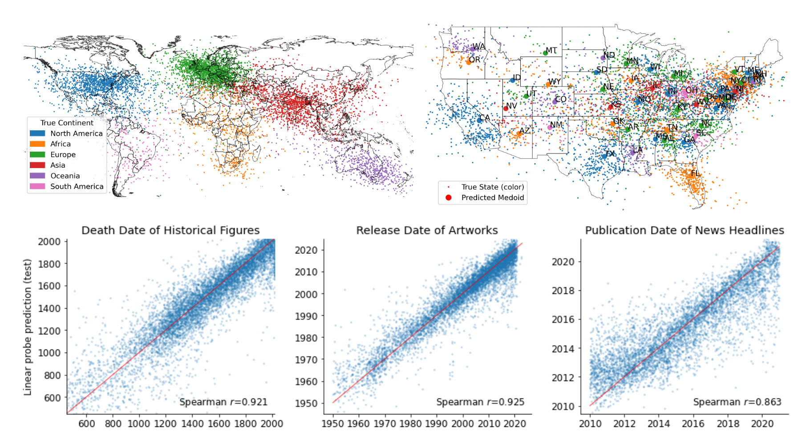
3.2 为什么重要
- 这个问题为什么值得做：关乎 LLM 能力边界与可解释性基础。
- 现实应用价值：可用于检索增强、时序对齐与事实校准。
- 学术上的意义：把抽象争议转化为可量化实验问题。
3.3 难点
- 难点 1：探针可解码并不等于模型在生成时因果使用该表示。
- 难点 2：空间误差受地理密度影响，绝对距离指标可能失真。
- 难点 3：需要跨数据集、跨实体类型、跨 prompt 才能排除偶然相关。
4. 论文方法
4.1 方法总览
- 方法名称：基于层级激活的线性探针框架。
- 整体思路：提取 Llama-2 各层残差流激活，对空间坐标/时间标签训练线性探针，并做鲁棒性与泛化验证。
- 代理目标 / 损失 / 优化目标：岭回归目标
||Y-AW||^2 + λ||W||^2，并用留一交叉验证（LOOCV）选择λ。
4.2 核心设计
每个设计都尽量回答：做了什么、为什么这么设计、解决了哪个难点
1. 模块一：数据构建与激活提取
- 做了什么：
- 构建 3 个空间数据集（世界/美国/纽约）和 3 个时间数据集（历史人物/文娱作品/新闻）。
- 对每个实体名称抽取模型各层最后 token 激活，形成层级激活数据集。
- 为什么这么设计：覆盖不同尺度与实体类型，测试表示是否统一可迁移。
- 关键实现：
- 模型：Llama-2 7B/13B/70B。
- 激活维度：每层形成
n × d_model表征矩阵。
对应数据构建示意：
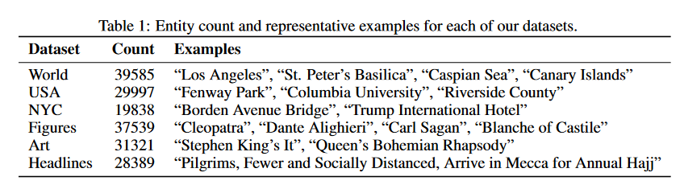
2. 模块二：线性探针与评价指标
- 做了什么：
- 对每层激活拟合线性探针，预测经纬度或时间。
- 用
R^2、Spearman、接近误差评估拟合与泛化能力。 - 为什么这么设计：
R^2/Spearman 衡量回归关联。- 接近误差更适合空间分布不均匀数据（避免固定距离偏差）。
- 关键实现：
- 线性探针与非线性 MLP 探针对照。
- LOOCV 调整正则项，减少过拟合。
指标解释与图示：
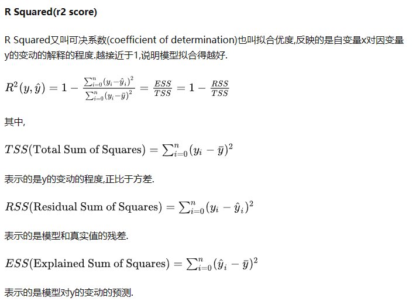
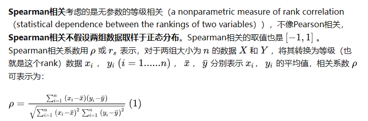
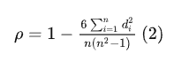
3. 模块三：鲁棒性与泛化验证
- 做了什么：
- prompt 变体测试（空提示、消歧提示、随机 token、全大写等）。
- 块留出泛化（国家/年代等分块外推）。
- 跨实体泛化（按实体类别留出）。
- PCA 压缩探针（低维主成分可解释性测试）。
- 神经元层面定位（时空相关神经元分析）。
- 为什么这么设计：
- 验证结果并非“提示偶然性”或“探针记忆查表”。
- 关键实现：
- 比较线性探针与非线性探针增益差。
- 比较默认切分与严格留出切分性能差异。
相关可视化按实验子问题排列：
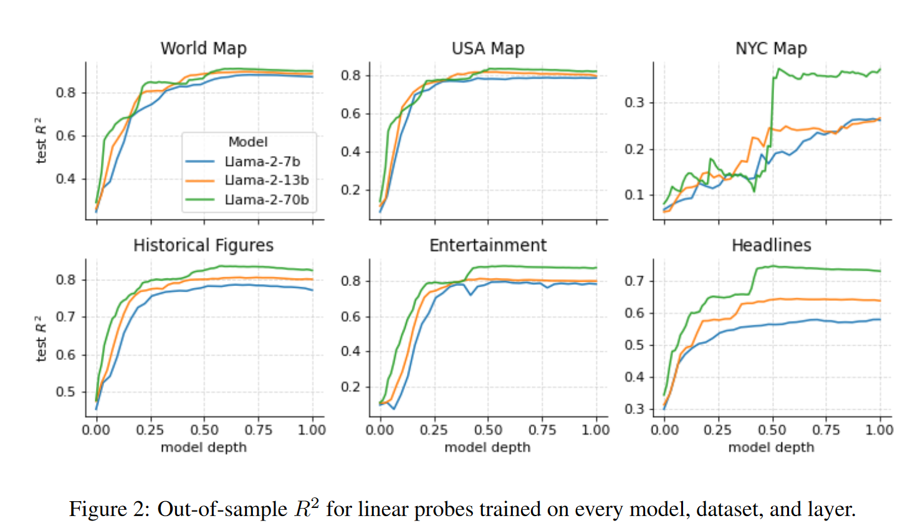
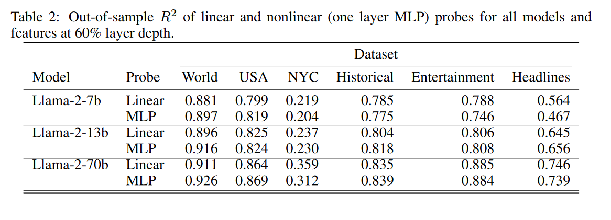
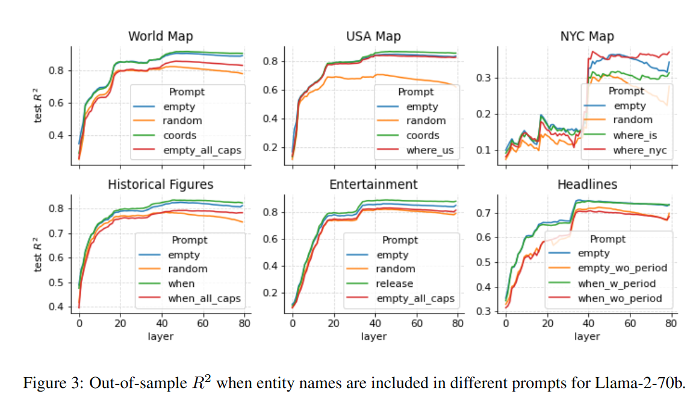
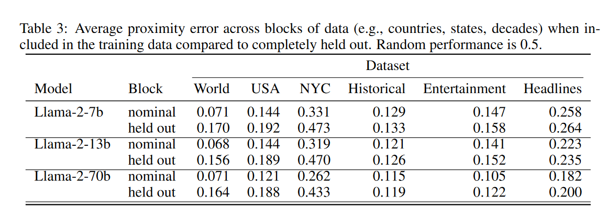
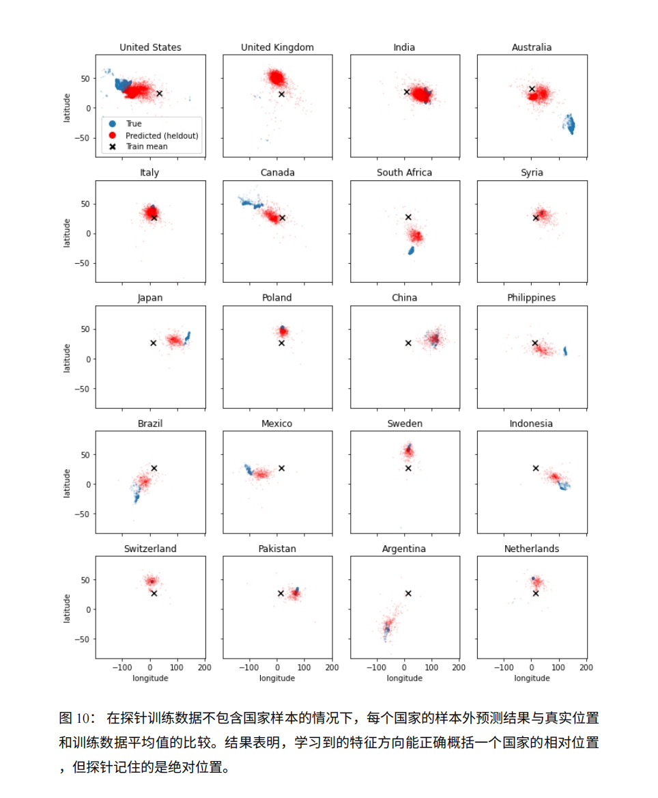
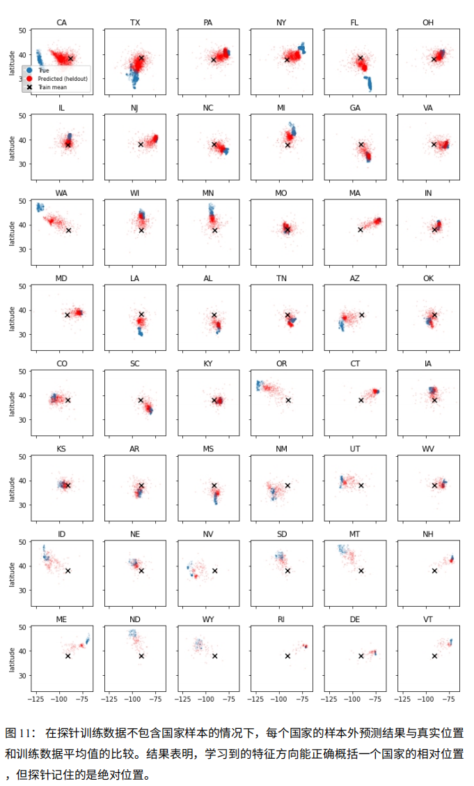
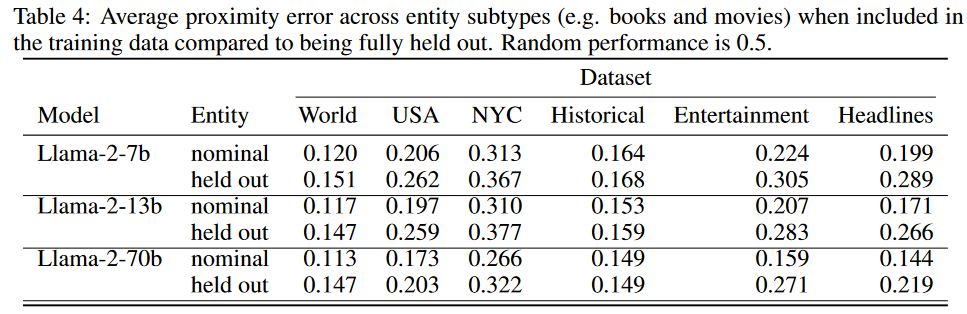
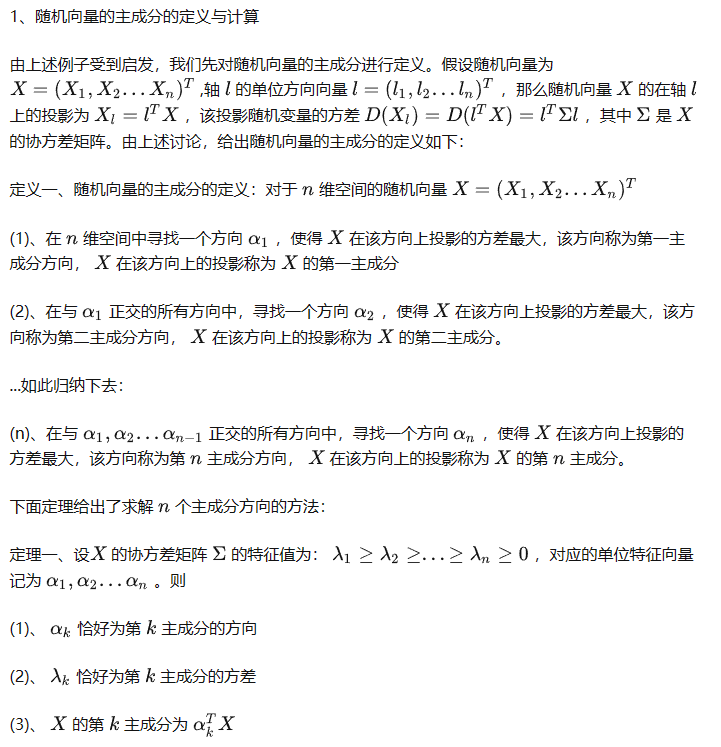
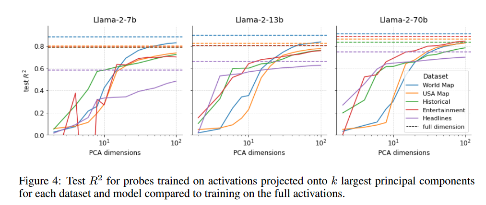
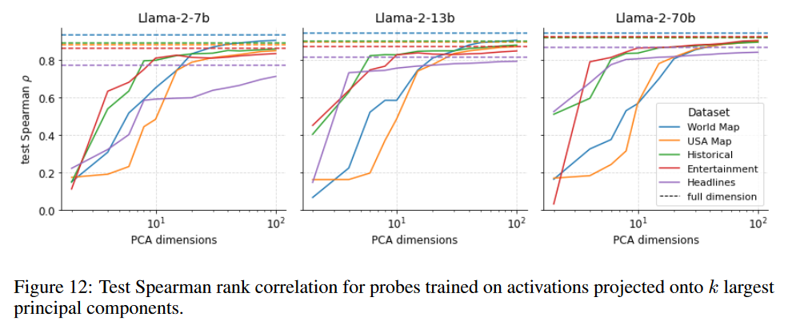
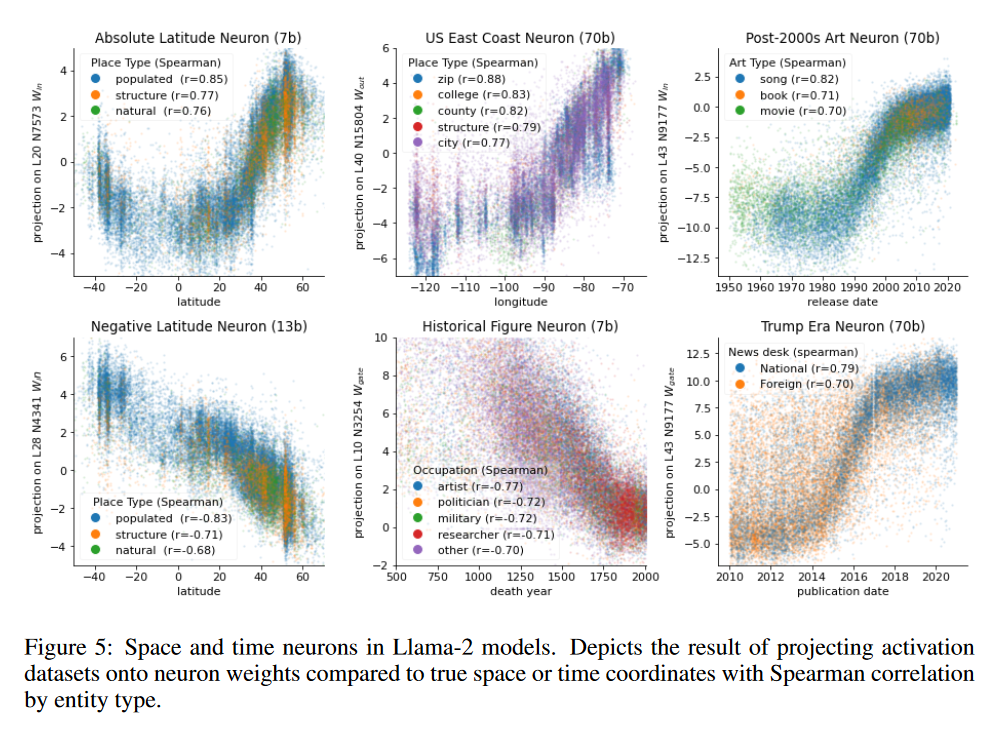
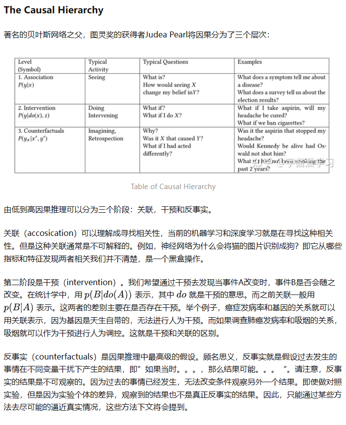
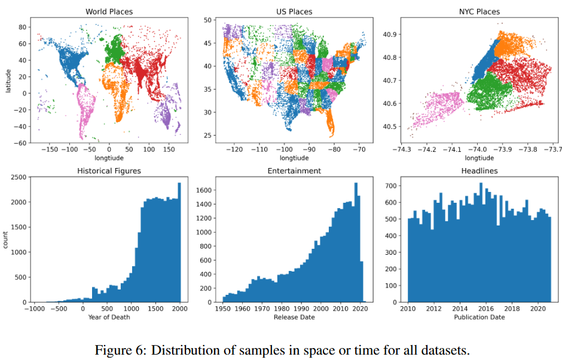
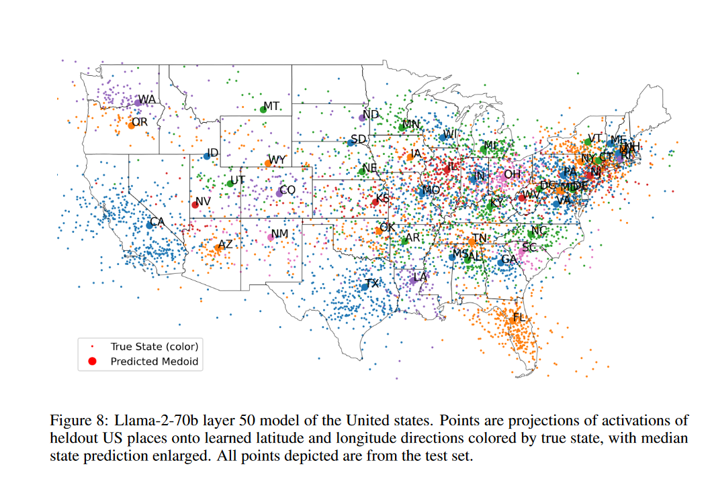
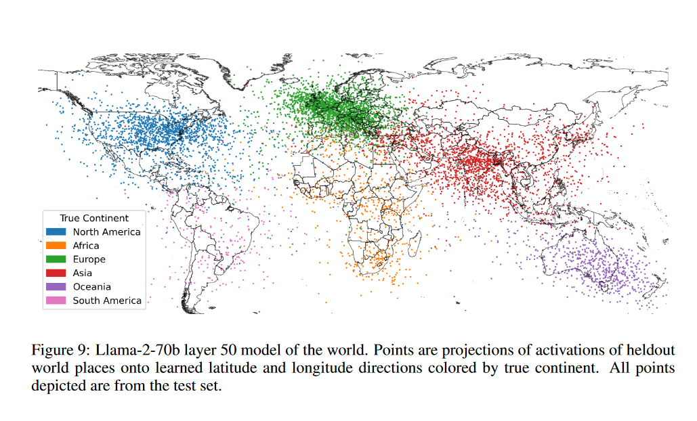
4.3 训练 / 推理细节
- 训练阶段做了什么：训练线性/非线性探针，不改动被测语言模型参数。
- 推理阶段做了什么：对层激活进行时空属性解码与泛化评估。
- 损失函数组成：岭回归目标
||Y-AW||^2 + λ||W||^2。 - 关键超参数：正则项
λ（LOOCV 选择）、PCA 维数等。 - 复杂度 / 额外开销：探针训练开销低于全模型微调。
5. 论文贡献（只写作者真正新增的东西）
- 贡献 1：提供证据支持 LLM 内部存在可线性解码的时空表示。
- 贡献 2：证明该表示在多提示场景下具有较强鲁棒性。
- 贡献 3：展示跨实体统一表示能力与神经元层面的可解释线索。
判断标准：如果删掉这一点，论文是否还成立？如果“是”，那它可能不是核心贡献。
6. 实验设置
- 数据集：世界/美国/纽约地点；历史人物死亡年份；文娱发布时间；新闻时间。
- 模型：Llama-2 7B/13B/70B。
- 对比方法：线性探针 vs 非线性 MLP 探针；多种 prompt 和泛化切分策略。
- 评价指标：
R^2、Spearman rank correlation、接近误差。 - 关键超参数：岭回归正则
λ（LOOCV 选择）、PCA 主成分数k。
7. 主要结果
7.1 主结果
- 结果 1：模型在早中层就形成较强时空可解码表示，且模型越大效果越好。
- 结果 2：非线性探针相对线性探针增益很小，支持线性表示假设。
- 结果 3：块留出与跨实体泛化虽有退化但显著优于随机，显示结构化相对定位信息。
7.2 从结果中能读出的结论
- 结论 1：时空信息并非只在末层出现，早中层已有可解码结构。
- 结论 2：线性探针已能解释主要可解码信息，非线性增益有限。
- 结论 3：跨块与跨实体泛化支持结构表示假设。
7.3 最关键的证据
- 最关键表格：跨模型/跨层性能对比结果。
- 最关键图：时空投影与鲁棒性、泛化可视化图。
- 最关键数字：
R^2、Spearman、接近误差的跨设定趋势。 - 为什么它最关键：直接反驳“仅靠记忆查表”的单一解释。
8. 消融实验
- 消融点 1：随机 token prompt 明显降低性能，消歧提示影响较小。
- 消融点 2：PCA 降维后仍保留可观性能，表示信息具有低维可压缩性。
- 消融点 3：跨块与跨实体实验共同支持“结构表示”而非“纯记忆映射”。
9. 和已有工作的关系
- 这篇论文最接近哪些方法：神经探针、表示几何分析、世界模型实证研究。
- 和已有方法相比，最大的不同：系统整合提示鲁棒性、块留出、跨实体泛化三类证据。
- 真正的新意在哪里：将时空表示存在性问题做成可复现流程。
- 哪些地方更像“工程改进”而不是“方法创新”：数据清洗与评估细节。
- 这篇论文在整个研究脉络里的位置：LLM 世界模型证据链中的关键探针工作。
10. 我的理解（这一节不能照抄论文）
- 直观理解：LLM 至少学到了一种可坐标化的时空语义流形，而不只是词频共现统计。
- 最值得关注的设计：跨实体泛化 + 块留出的组合证据链。
- 和已有方法相比的新意：把“世界模型争议”转成可量化、可复现实验流程。
- 我认为最强的一点：结论不依赖单一 prompt 或单一实体域。
11. 局限性
- 局限 1：探针结论仍是间接证据，无法完全证明模型在推理中必然因果使用该表示。
- 局限 2：数据清洗与元数据构建策略可能影响结果稳定性。
- 局限 3：主要验证集中于 Llama2 系列，跨架构泛化仍需补证。
可从假设过强、实验覆盖不足、开销过大、泛化不明、复现风险高等角度写。
12. 对我的启发
- 能直接借鉴的部分：线性探针 + 鲁棒性/泛化联合验证流程。
- 不能直接照搬的部分：数据构建质量对结论影响较大。
- 对我当前课题的启发：可做领域化时空探针与神经元定位分析。
- 可以尝试的改进方向：跨架构验证、因果干预式探针、在线评测。
- 可以作为 baseline / 对比项 / ablation 的部分：线性 vs 非线性探针、提示扰动、块留出。
13. 待验证问题
- 问题 1：更强推理模型中的时空神经元是更集中还是更分散？
- 问题 2：时空表示与知识编辑/事实更新之间如何耦合？
- 问题 3：能否把该表示用于可控检索、时间对齐与事实校准？
14. 一句话总结
- 这项工作用系统探针证据支持了“LLM 内部存在跨实体统一、可线性解码的时空表示”。
15. 快速索引（便于二次回看）
- 核心公式：岭回归探针目标函数。
- 核心图表：时空投影图、鲁棒性图、跨实体泛化图。
- 最值得复看的章节：模块二与模块三实验部分。
- 复现时最需要注意的点：样本构建、切分策略与评价指标口径。
15.1 整合说明 / 索引
- 本篇全部原始图文内容已完整并入 1~14 节，图片均保留在对应位置。
15.2 导入来源与完整性记录
- 源笔记：LLM体现出时空概念.md
- 资源目录：
papers_sources/Research-Paper-Notes/LLM体现出时空概念.assets/ - 联网补充来源：
- arXiv: https://arxiv.org/abs/2310.02207
15.3 已完成自检记录
- [x] 原始笔记所有内容已整理进模板结构。
- [x] 图片已插入并保留在相应位置。
- [x] 已联网补充论文元信息。
Wiki 关联
- 参考摘要：Language Models Represent Space and Time
- 概念锚点：Prompt-Robust Representation Probing、Spatio-Temporal Pretraining for Language Models、Linear Probe World-Model Evaluation
- 实体锚点：Wes Gurnee、Max Tegmark、Llama-2
- 综合页面：Representation Capacity and Effective Rank、Temporal Structure Learning in Sequence Models、Spatio-Temporal Representation in Language Models